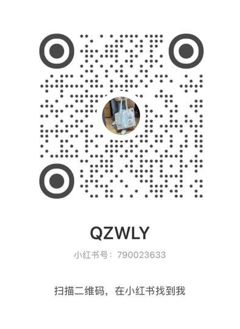

我至今记得湘水的秋天，空气里总有一股潮湿的灰泥味，从县水泥厂的烟囱里飘出来，贴着云川县的屋顶慢慢游走。那味道钻进衣服领口，洗也洗不掉，像这个镇子本身似的，黏在皮肤上。
我叫刘岚。一九八九年冬天生的，属蛇，十一月二十四号，射手座，血型B——这些是我从妈妈留下的那张出生证明上抄下来的。那张纸被我折了四折，塞在书包最里面的夹层里，和一张银行卡挨在一起。
卡是妈妈走之前留的，她走的那天是几月几号我记不清了，只记得放学回家，灶台上搁着一张卡，一张纸条，纸条上写着一串密码，字迹歪歪扭扭的，像手在发抖。每个月里面会多出二百五十块钱，不多不少，刚好够我吃饭。爸爸在水泥厂扛袋子，装卸工，常年不在家，偶尔回来一趟也是满身灰，倒头就睡，第二天天不亮又走了。我们像两个住在同一间屋子里的陌生人，连吵架都懒得吵。八岁那年他们离婚，妈妈拖着行李箱站在门口，回头看了我一眼，说了句什么，我没听清。我站在客厅中间，手里攥着一个橘子，橘子皮被我抠得坑坑洼洼。门关上之后，我把橘子吃了，然后把皮扔进垃圾桶里，洗干净手，去写作业了。后来我想，那时候大概应该哭的，但哭不出来。我妈大概也觉得我应该哭，所以她站在门口等了一会儿，等那声哭。我没给她。所以她就走了。
湘水市云川县这个地方，说大不大，说小不小，四面都是山，山不高的，灰扑扑的，像蹲着的一排老人。洋栖中学就在县城东边，挨着一条干涸的河沟，校门口两棵梧桐树，歪歪扭扭的，叶子一到九月就黄了半边。我零五年上了高一。其实以我的中考分数，去不了什么好学校，但洋栖中学也不算什么好学校，民办的，收学费比公办贵一点，但管得严，号称军事化管理，很多家长图这个，把孩子往里送。我爸大概是图省事，交了学费就走了，连宿舍楼都没进。
我每周离校一天，周日。但我不回家，回家也是一个人，灶台冷的，水壶空的，床板上铺着一层灰。我去网吧。县城里那几家网吧我全都熟，老板见了我就点头，也不查我身份证。那个时候我在网上认识了一个笔友，女的，不知道叫什么名字，也不知道多大，只知道她也念高中。我们用邮件通信，她发一封，我回一封，她在信里跟我讲她那边的事，讲南方的雨，讲学校食堂的糖醋排骨，讲她暗恋的一个男生。我给她讲什么呢？我想了想，好像没什么可讲的。我就给她讲我看的电影。
我喜欢看老电影。《阿甘正传》《罗马假日》《肖申克的救赎》，都是从网吧的硬盘里翻出来的，画质糊得像蒙了一层纱。我喜欢老歌，邓丽君，罗大佑，磁带是从地摊上买的，两块钱一盘，用我那个随身听听，耳机线缠得乱七八糟。我爸有一台收音机，搁在柜子顶上落满了灰，我把它拿下来擦干净，能收到几个台，夜里放一些老歌，滋滋啦啦的杂音里，女声软绵绵地唱，我就躺在床上听，听完了睡觉。
在学校里我名声不好。班主任刘芳教英语，三十出头，说话的时候喜欢把下巴微微仰起来，好像嘴里每一个字都是什么金贵东西。她在我档案上写过一段评语，我偷偷看过——“该生性格偏激，目无尊长，不服管教，屡教不改，对批评教育始终抵触对抗，严重影响班风，望家长严加管教。”她让我把这段话拿回去给我爸签字，我没拿。她问我为什么，我说我爸不识字。她愣了一下，然后说，那你让邻居签。我说邻居也不识字。她看了我一眼，那眼神里有点什么，说不上来，可怜还是厌恶，大概都有。
其实我爸识字的，就是懒得管。
每周一升旗仪式，我经常被通报。迟到通报，仪容仪表通报，宿舍卫生不合格通报，教导主任李建国在主席台上念我名字的时候，底下有人笑，有人扭头看我。我站在队列里，抬头看旗杆顶上的国旗，风把它吹得猎猎响，那个声音把李建国的声音盖住了，我就假装听不见。我那时候觉得，这日子就这么过吧，不好不坏的，像湘水那条河，流得慢悠悠的，看不出往前还是往后。
直到我遇见焦思雨。
高二分班，座位重新排，我被安排跟她同桌。九月的教室还热着，电风扇在头顶嘎吱嘎吱转，窗外的梧桐树叶子被太阳晒得发蔫。她坐在靠窗那一侧，我背着书包走过去的时候，她正在低头写字，短发垂在耳侧，露出小小一截后颈。我把书包往桌上一摔，她抖了一下，抬起头看我。她的眼睛很干净。不是那种水汪汪的干净，是那种——像山里头的井水，深，静，没什么波澜，但你往里看的时候能看见自己的倒影。她皮肤白，瘦，肩膀窄窄的，校服穿在身上空荡荡的，像借了别人的衣服。她的短发发尾不太齐，大概是自己在宿舍拿剪刀修的，后脑勺那儿有一小撮翘起来，翘了一整天，她不知道。
“你好，”她说。声音很轻，像怕吵醒谁似的。我说嗯。她就不再说话了，低下头继续写字。我看见她的字写得很小，一笔一画的，规规矩矩，格子框得死死的，绝不越出去半分。她抄到第三遍的时候笔尖顿了一下，在纸面上点了一个小小的墨点，她拿手指去蹭了一下，蹭不干净，就皱了皱眉。那个皱眉的动作很轻，轻到几乎看不出来，但我看见了。我不知道为什么注意到了这个。大概是因为她整个人都太安静了，安静得像教室里多出来的一面墙，你不特意去看，根本不会发现那儿有个人。
后来我才慢慢知道一些她的事。她是本地人，跟我一样，但比我小一个多月，她爸叫焦远舟，在乡卫生院做临时护工，她妈叫林听雨，在临天崖景区扫马路。她家比我家还穷，穷到什么程度呢，她爸妈把她送进高中之后，人就不见了。不是死了，是消失了。改了家庭住址，没留电话，没留口信，像两滴水落进河里，无声无息。她找不到他们，也没有办法回家，就申请了助学金，常年住在学校，节假日也不走。
这些事情不是她告诉我的。是我从别处听来的，刘芳在办公室跟别的老师聊天的时候说的，声音压得很低，但我在走廊上路过，门没关严，飘出来几句。我站在门口听了一会儿，然后走了。
她没有朋友。课间的时候别的女生三三两两去小卖部，她一个人坐在座位上看书，偶尔抬起头看一眼窗外。有人跟她说话她就回答，声音小小的，客客气气的，带着一种小心翼翼的礼貌，那种礼貌不是教养，是怕。她怕给人添麻烦，怕挡了别人的路，怕自己多占了一寸地方。她坐在座位上永远只坐半边椅子，胳膊肘绝不越过课桌的中线，连翻书页的声音都压到最低。
我这个人向来不太管别人怎么看我的，但焦思雨坐在我旁边，我反而变得有点不自在了。不是那种不舒服的不自在，是那种——你在一间乱糟糟的屋子里坐惯了，忽然有人进来，安安静静地坐在角落，你突然就看见了自己扔在地上的那些垃圾。她像一面镜子，安安静静地照着，什么都不说，但什么都照出来了。
我开始注意到一些事情。她的课本包了书皮，用的是旧挂历纸，背面是白的，她在上面写了科目名称，字迹工工整整。她的笔不多，就两三支，但每一支都套着笔帽，摆在桌面上排成一排。她的橡皮用得只剩一小块了，指甲盖那么大，还捏着用，舍不得扔。
她学习成绩好，中上游。刘芳在家长会上表扬过她，她被表扬的时候没有笑，也没有不好意思，就低着头看桌面，手指捏着笔杆，慢慢转了一圈。她没有什么特别的爱好。不喜欢看电影，不喜欢听歌，不看课外书——她把所有的时间都用来念书了，好像念书是她的救命稻草，攥住了就不肯松手。她想考大学，想考一个好大学，离开这里。这个“这里”是什么，她没有说过。但我知道。
十月的一个下午，下了点小雨。湘水的秋天很少下雨，但那天下了，细细的，密密的，打在窗户上沙沙响。下课铃响了，教室里的人陆陆续续走了，她没走，坐在座位上继续写数学卷子。我也没走，趴在那看她写。她写数学的时候习惯咬笔帽，下唇微微抿着，眉头轻轻蹙起来。她做一道大题要算很久，草稿纸上的演算过程写得整整齐齐，每一步都标了序号。她算完一道题，把答案抄上去，然后停下来，把整道题从头到尾看一遍，才翻到下一页。“你一直看着我干嘛？”她忽然说，没抬头。我愣了一下，说无聊。她没接话，继续写。过了一会儿，她把草稿纸上写满的那一页撕下来，翻了个面，推到我面前。白得晃眼。“你要不要写点什么？”她问。我说写什么。她想了想，说随便。
我拿起笔，在纸上画了一个火柴人，歪歪扭扭的，旁边画了一棵树，树比人大三倍。她低头看了一眼，嘴角动了一下，不知道是想笑还是什么，然后继续写她的卷子了。那天的雨下到傍晚才停。她把卷子收进书包里，站起来，看了我一眼，说：“你还不走吗？”我说不走。她点点头，转身走了。她走路很轻，脚步声几乎听不见。我坐在座位上，把那张画了火柴人的草稿纸翻过来，看见她演算的那道题，步骤写得清清楚楚，连辅助线都画得端端正正。她的笔迹秀气，但仔细看能看出来，有些笔画的末端微微发抖，像写字的那个人在忍耐什么。我把那张纸折起来，塞进了书包里。
一个下午，英语课。我盯着焦思雨的侧脸看了一会儿，不知道哪根筋搭错了，从草稿纸上撕了一小条下来，拿铅笔开始画。先画了一个圆圆的脑袋，两道弯弯的眼睛，小小的嘴巴，一头短发，发尾翘起来那一撮点了几个点。没注意到刘芳什么时候走下来的，等我感觉到头顶有一片影子压下来的时候，她已经站在我旁边了。两根指头夹起那张纸条，拿到眼前看了一眼。教室里安静了一瞬，所有人同时屏住呼吸的那种安静。
“这是什么？”她问。我没说话。她看了看纸条，又看了看焦思雨，目光在焦思雨脸上停了一秒。焦思雨没有抬头，但我看见她握笔的手指收紧了一下，指节泛白。“刘岚，你站起来。”我站起来了。椅子腿在地上刮出一声刺耳的响，后排有人笑了一声。
刘芳把那纸条放在讲台上，拿粉笔压住，然后回到讲台上继续讲课。我站在座位旁边，站了整整一节课。下课铃响了，刘芳把纸条叠了一下，放进上衣口袋里，对我说：“跟我来办公室。”教导主任李建国看了那张纸条一眼，说记过，通报批评。我站在办公室中央，日光灯嗡嗡响。我看着刘芳把那纸条又折了一下，塞进她自己的笔记本里。从办公室出来的时候，我靠着墙站了一会儿，攥着拳头在墙上捶了一下，指节上的皮蹭破了。
我恼的不是那个处分。我恼的是那张纸条被拿走了，被当成一个什么东西，摊在办公桌上，被两个成年人翻来覆去地看。那上面画的是焦思雨。
我想起那年冬天，湘水下了第一场雪。食堂的暖气坏了，我端着餐盘找位子，看见焦思雨一个人坐在角落里。我走过去坐下了。她抬头看了我一眼，没说话。她吃的是白菜和米饭，拿筷子一粒一粒往嘴里送。她的手指上有冻疮，左手食指和中指的关节处红红的，肿了一点。我把自己餐盘里的鸡蛋夹起来放到她餐盘里。她愣了一下，看着我。“我不爱吃鸡蛋。”我说。她没有推回来，低下头，拿筷子把鸡蛋夹成两半，一半送进嘴里，另一半搁在米饭上面，慢慢吃完了。从那以后，我们在食堂碰到的时候会坐在一起。她开始会偶尔主动跟我说一两句话，声音还是轻轻的，但那种小心翼翼的感觉淡了一些。
有一天晚自习停电，整个教学楼黑了一片。我在黑暗里坐着，听见隔壁座位有人轻轻吸了一下鼻子。是焦思雨。她在发抖，整个人绷得很紧，呼吸又浅又急。我伸出手，在黑暗里摸到了她的手背，冰凉的。她没有缩回去，就那么让我握着。一直到电来了，日光灯闪了两下亮了。她把手抽回去，低下头。但她后来没有再发抖了。
二〇〇六年的秋天，我闯了一个我永远没办法原谅自己的祸。十月十八号，晚自习结束后我回到宿舍，对焦思雨说，我帮你烫头发吧。没想到的是她的头发被卡住了。她发出吃痛的声音，我赶忙帮她，虎口也被烫红了一片。然后，我看见她的右半边脸上有一片发红的东西，她抬起手捂住右脸，手指缝里露出一点皮肤，红得发亮，像被烫熟了一样。她没有叫，没有哭，就那么站着。
她在医院待了三天。回学校的时候右脸上贴着一块纱布，从颧骨一直盖到耳根。她走进教室，坐到座位上，拿出课本，翻开，开始看书。没有看我一眼。不是故意不看的，就是没看。我们之间隔着一层什么东西，透明的，薄薄的，但很硬，像一块玻璃。有一天下午，体育课，她在操场上坐着。我坐在她旁边。“刘岚。”她忽然叫了我一声。
“疼吗？”我问。
她沉默了一会儿，说：“不疼了。”停了一下，她又说：“你别再拿那种东西了。”不是质问，不是责备，就是很平淡的一句话。
那件事之后我变了很多。心里头有一块地方软下去了。十一月初的一个周末，我在县城那条街上闲逛，路过一家小饰品店，橱窗里挂着一个发圈，孔雀蓝的，丝绒质地，上头缀着几颗暗色的小珠子。
那个蓝色让我想起焦思雨右脸上那片还没完全褪去的浅红色印记——蓝色和红色搁在一起是什么样，我说不上来，但就是觉得那个发圈应该在她头上。
八块钱。我兜里还剩十五。我把它买下来，回学校找她。她坐在床沿上看书，右脸上那片浅红色的印记在日光灯下看得清楚了一些。我把发圈递过去，说给你。她看了看，没有伸手接。“发圈。孔雀蓝的。我觉得——”我顿了一下，把后半句咽回去了。她伸手接过去了，指尖碰到我的掌心的时候凉凉的，微微颤了一下。她把发圈套在手腕上试了试，孔雀蓝衬着她腕上青色的血管。她把发圈褪下来，搁在枕头边上。“为什么？”她问。“不为什么。逛的时候看见了，顺手买的。”
从那之后，我帮她打饭，帮她占座，她值日的时候我留下来。我在校门口的文具店里买了一盒彩色铅笔，二十四色的，搁在她桌上。她打开看了看，拿了一支蓝色的在纸上画了一道。“你买的？”“不是，捡的。”十二月的一个晚自习，我趴在桌上看她做数学卷子，忽然开口说：“你也去办个走读吧。”“我没有家可以回。”“那就回我家。”她的笔尖停在纸面上，墨水洇开了一个小圆点。“你家不是没人吗。”“就是没人所以才叫你啊。我一个人待着也是待着，你一个人待着也是待着，两个人待着不就不是一个人了吗。”她放下笔，转过头看我，眼睛在日光灯下显得格外亮。“我没钱。”“我有。够两个人花的。”她低下头，手指捏着笔杆慢慢转了一圈又一圈。“我脸上这个样子，”她忽然说，声音低得几乎听不见，“出去不好看。”“好看。”“你骗人。”“我什么时候骗过你。”她沉默了很久，伸手拿起那个孔雀蓝的发圈，套在手腕上，又褪下来，又套上去。“我考虑一下。”她说。
她开始每周日跟我一起走出校门，沿着那条干涸的河沟走十五分钟，到我家。我家在水泥厂后面的职工宿舍楼里，四楼。门锁要往上提一下才能拧开，我第一次带她来的时候拧了半天拧不开，她在后面站着，没有说话，但我感觉到她在忍着笑。
她站在门口看了看，走进来，把书包放在沙发上，弯下腰把茶几上那半包抽纸摆正了。她走到窗边看了一眼外面，水泥厂的烟囱在暮色里冒着白烟。“你从小住在这里？”“嗯。”“挺好的。”她说。我翻出柜子里的彩色铅笔和几张素描纸，只有十二色，好几支都秃了。我们盘腿坐在地板上画画。她画了一棵树，树冠画成了一个绿色的圆形，树干画成了两根平行的直线，像一根棒棒糖。画完看了半天，自己先笑了。那个笑声很轻，像薄冰在春天裂开第一道缝，底下有水流的声音。我画了一个火柴人，旁边画了一棵树，树比人大三倍。她把那张纸拿过去，在我的火柴人旁边又画了一个火柴人，个子矮一点，头发画了几根短线。“这是谁？”“不知道。”
那个傍晚我们画了很久。画到窗外的天从灰蓝变成深紫，再从深紫变成漆黑。她画了一只猫，猫的胡子画了六根；她画了一朵云，云下面画了一道歪歪扭扭的雨；她画了一个太阳，太阳长了一张笑脸，笑得嘴巴咧到了耳根。“你画的东西都长得好开心。”“是吗。”她低头看了看那个太阳，伸出手指摸了摸那张笑脸。“可能因为我——”她停了一下，没有说下去。我画了一条河，河面上画了几道波纹，河岸边画了两棵梧桐树。“这是什么河？”“湘水。”“湘水不是干的吗？”“在我心里没干。”她低下头，在我的河上面加了两只鸟，很小的两只，飞得很低，翅膀挨着翅膀。
“刘岚。”“嗯。”“你以后想干什么？”从来没有人问过我这个问题。“不知道。你呢？”“我想考大学。考出去，去一个大一点的城市。有山有水的那种，不是这种灰扑扑的山，是青的，绿的。有水的那种，不是干掉的河沟，是真正的河，有水的。”
“那我跟你一起。”
她转过头看我，把发圈重新套回手腕上，收紧了一点。“你又考不上大学。”她说，嘴角是翘着的。“考不上就考不上呗，我可以在大学旁边租个房子，打工挣钱，你下课了就来找我，我们还画画。”“你还画火柴人？”“我以后不画火柴人了，我画你。”她没有接这句话。低下头，把地上散落的彩色铅笔一支一支捡起来，按照颜色排好，红的橙的黄的一排，绿的蓝的紫的一排。她把铅笔放进盒子里的时候动作很慢，每一支都对准了卡槽才按下去，咔嗒一声。装完了，她把盒子递给我。“下次买好一点的纸，这种纸洇墨。”“好。”“还要买一个转笔刀，你的铅笔都秃了。”“好。”“还有——”她停了一下，看了看我，又看了看满地的画。
她没有说完那句话，但我看见她的眼睛里有什么东西亮了，不是泪光，是别的什么，比泪光更亮，更沉，就好像井底那枚月亮终于从水底浮上来了。
那天晚上我送她回学校，走在河沟边上，月光很淡，风很冷。我们并肩走着，肩膀偶尔碰在一起，她没有躲开，我也没有躲开。河沟里没有水，但我觉得我听见了水声，从很远的地方流过来，流向那个她说要去的、有山有水的大城市。走到校门口的时候她停下来，转过身看着我。“周日你还来吗？”“来。”“那你别迟到了。”“不会。”她转身走进校门，走了几步又停下来，回头看了我一眼。她的头发被风吹乱了，右边的头发飘起来，露出那片浅浅的红。她没有伸手去挡，就那么站着，让风把她的头发吹得到处都是，孔雀蓝的发圈在腕上闪了一下。然后她笑了一下，转身走了。那个笑容比之前大了一点，整张脸都舒展开了，眼睛弯弯的，像画纸上那个笑得咧到耳根的太阳。我站在路灯下面，看着她的背影消失在宿舍楼的拐角处。
我低头看了看自己的手，虎口处那个烫伤的疤已经长好了，留下一小片皱皱的皮肤，粗糙的，硬的，像干掉的河床。但河床底下有水。我一直都知道。
恭喜您查明了所有真相，更多精彩内容敬请期待。
